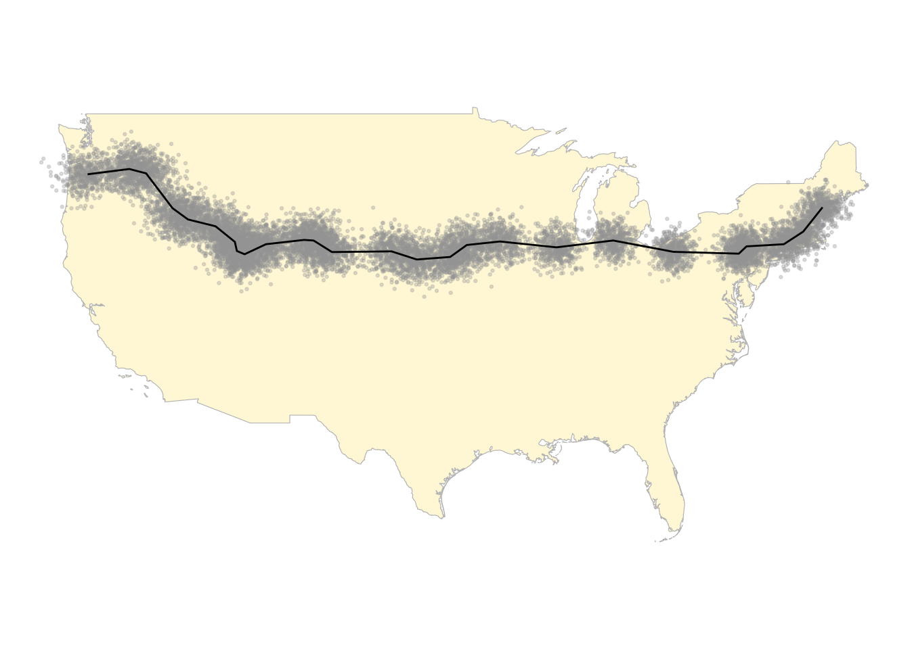
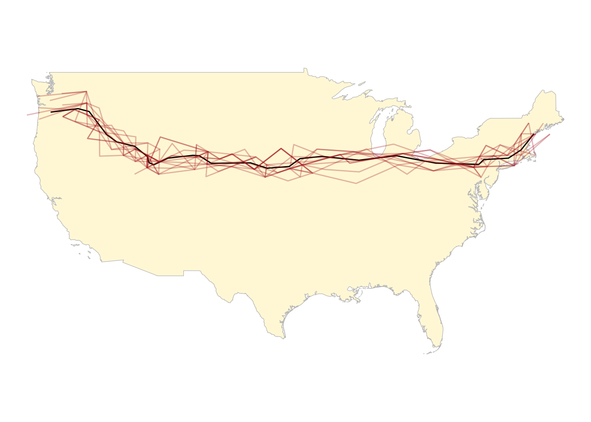
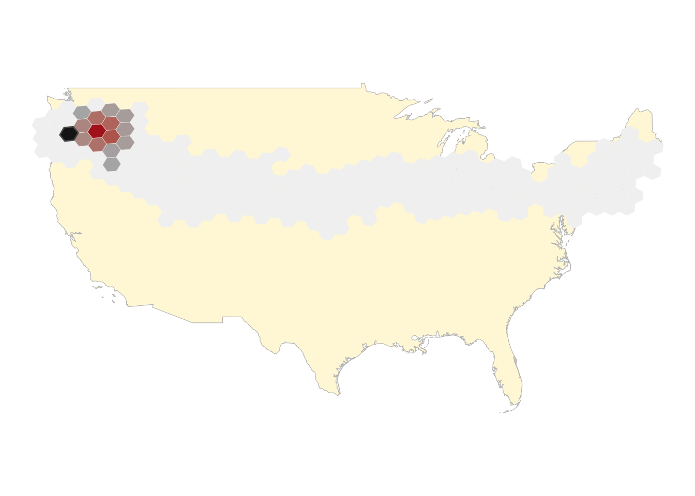
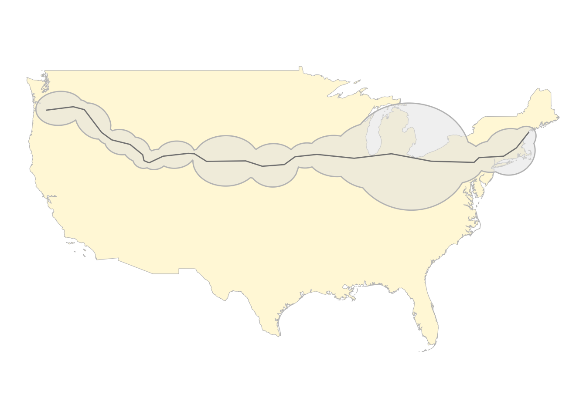
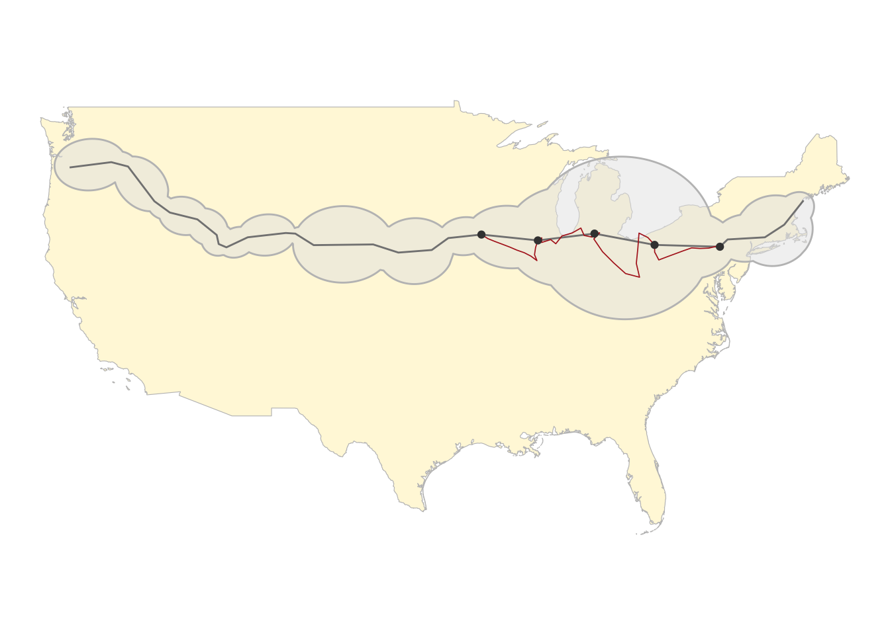
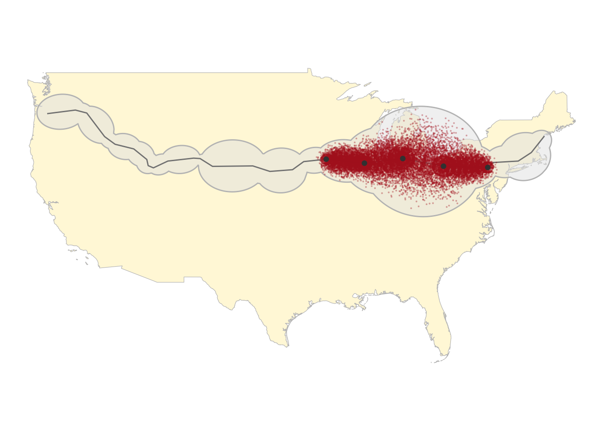
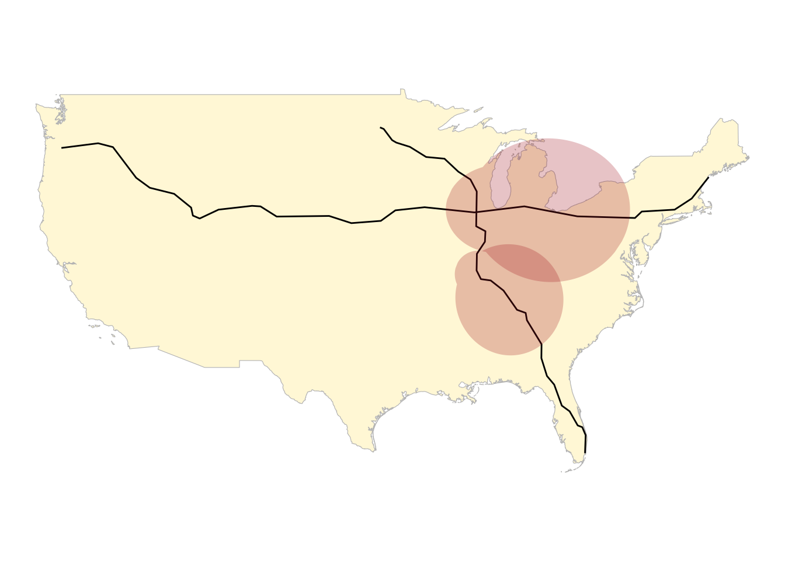
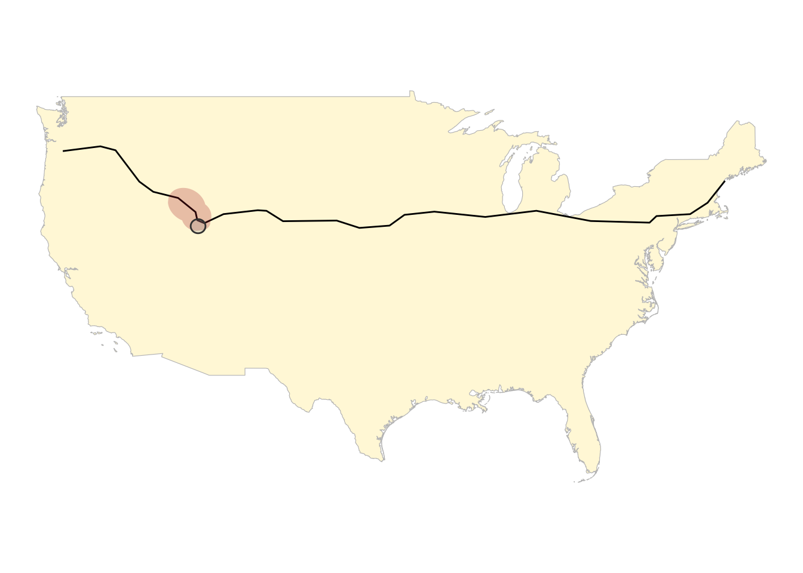
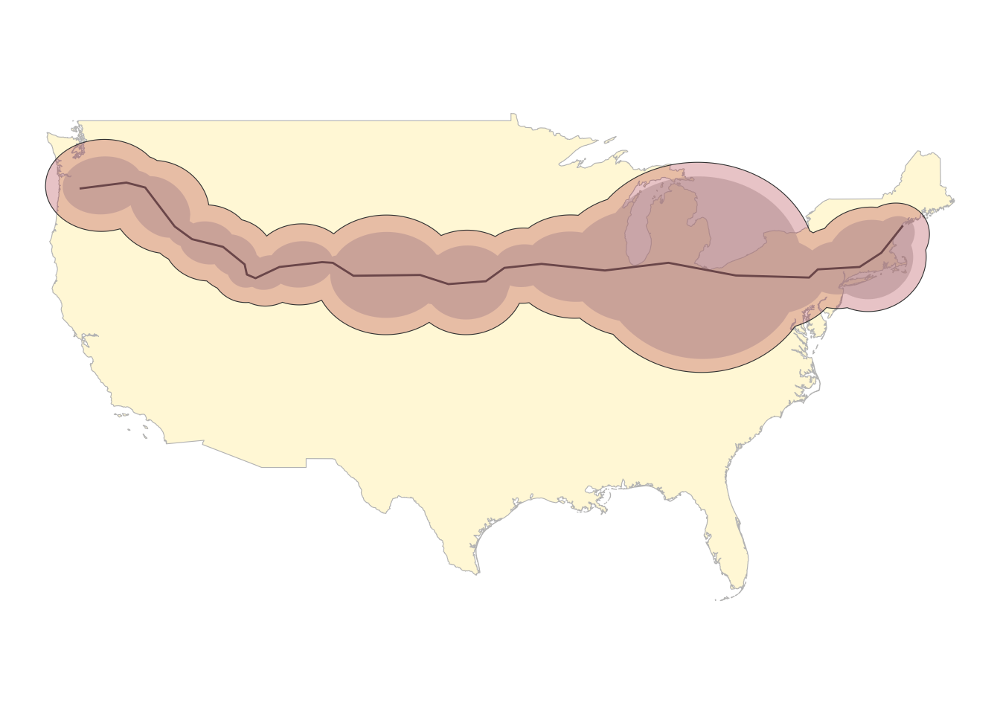

This write-up includes an investigation into trajectory mining with
spatio-temporal data, primarily with techniques derived from Miller’s
space-time prisms (STPs) and implemented with the
STPtrajectories R package.
A simulated dataset is generated from the travel route between
Portland, OR and Portland, ME. City coordinates are obtained from
OpenStreetMap via osmdata and the route between cities from
osrm. Five hundred imaginary trips are simulated from this
route by sampling from a Normal distribution with centroid value being
the point coordinates. The resulting point cloud is displayed below,
with the original path depicted as a black line.

We can use the 500 imaginary trips to estimate the original route via
monte carlo. To do this, we aggregate the point data by geohash (via the
h3 package), and the model uses the current
geohash to predict the next geohash. The “model” in this case
is really just a collection of geohash-pairs plus the number of times
this pair was seen in the data. To carry out the monte carlo process, we
start at one end of the route and randomly sample from geohash pairs to
determine the next grid location, until the process is completed (ie: we
have arrived at the other end of the route, or some maximum number of
iterations has been reached). The procedure is repeated many times so
that we have a collection of paths.

More interesting than the gross monte carlo results described above is a determination of the “next-hex probabilities”. In other words, given some current position, what does the probability distribution look like for each of the surrounding positions? This is fairly straightforward to implement with the model developed in the section above. In the example below, the current-hex is depicted in black, and the next-hex probabilities are represented by fill color in the surrounding geohashes,

The space-time prism is the envelope of all possible space–time paths between known locations and times.
The R package STPtrajectories includes an implementation of Miller’s space time prism as well as some related features like a random trajectory generator, potential path area, and the alibi query. Using the package vignette as a guide, we illustrate each of these features here within the context of the example above.
The potential path area (PPA) encompasses the region that can feasibly have been traversed between observed points, based on some maximum speed. It is the spatial footprint of the space-time prism. Given a maximum average speed of around 25 m/s (~55 mph), the PPA for our path between Portlands is given in the chart below. Notice that this looks quite different from the results presented above from the monte carlo simulation. There is a good reason for this: the regions depicted operate on the assumption that data points represent observables and the regions represent how far an individual may have traveled between observed points, based on the maximum average speed between these points. In contrast, the monte carlo results depicted above incorporate uncertainty on the observed positions, but ignore any variations between points. In fact, these methods are complementary, in the sense that one might consider generating PPAs from the monte carlo paths, and then combining the results together into an overall path probability distribution.

In the area chart above the region around the Great Lakes spans a large area because the “observed” points are spread further from one another. This means that, at 55 mph, an individual can travel further afield between observed points. Ignoring the presence or absence of roads, one can get an idea of the potential paths within this area with the random trajectory generator (RTG). The RTG uses a directed random walk (ie: a random walk with directional bias) to generate a path between anchor points. The chart below at left shows a single random trajectory generated to fill gaps between the “known” points. We use this same process to simulate 500 hypothetical paths around the Great Lakes region, as displayed in the chart at right below. Here, the paths are rendered as dots so that the result is effectively a dot-density map depicting the likelihood that an individual traveled through a given location. The result, according to Miller, is a bivariate multinomial distribution centered on each of the anchor points. Note that the density is noticeably smaller further from the markers, which represent observed locations.

The alibi query uses the spatial intersection of two trajectories to determine whether they may have been at the same place at the same time, based on the mathematical approach described here. In the present case, we create a new route from Fargo, ND to Miami, FL, starting at noon on 01-JUL and traveling at an average speed of 30 km/h. Given the two paths, the alibi query helps us determine a time period when the two trajectories may have intersected. The chart below shows PPAs associated with the time periods of interest, with the darker shade representing the potential area of overlap. In other words given what we know about the two paths, if these individuals met up at some point they likely did so within the dark red region some time between 2022-07-03 23:00:00 and 2022-07-04 21:23:00.

With the information gathered above, we can determine a time interval in which a given trajectory intersects with a particular location. For example, I’m curious when our original trajectory might pass within 50 km of Salt Lake City. The chart below shows a 50-km buffer around Salt Lake City, with the PPAs associated with the time period that the individual may have been within this buffer. The time period is 2022-07-02 01:08:00 to 2022-07-02 07:53:00.

It is straightforward to recreate the Potential Path Area (PPA) above with uncertainty added to the time and position. For the chart below, we add a position uncertainty of 10 km and a time uncertainty of 1 hour. We also add an “activity time” of 20 minutes at each location. The result, as seen in the chart below, is that the PPA is porportionally larger.

Several useful and interesting capabilities are made available with
Miller’s space-time prisms, as implemented in the
STPtrajectories R package.
One potential drawback of the package is that is uses objects built
on the older geospatial infrastructure from sp instead of
the newer sf. It may be possible to update this, however
since many of the package-defined objects are built from other objects
defined in the spacetime package, this could be more
challenging that it appears to be on the surface.
There are several other approaches to trajectory mining in the literature that may be worth investigating, especially if there are already implementations available. See Other Interesting References in the References section below for more information. Additionally, there are variations of the present methodology that account for road networks and other constraints, which may be worth exploring.
Primary References for this work
The STPtrajectories R package: GitHub page, documentation,
vignette
Time geography and space time prism, Miller, H. J. (2017)
What About People in Regional Science, Lecture transcript from Torsten Hagerstrand (1970) ~ origin of time geography
Analytic Solution for the alibi query: official, semantic scholar (for pdf)
Other Interesting References
Spatio-temporal footprint change discovery:
Exploring Movement: Similarity Analysis of Moving Objects (2009)
Density-based co-location pattern discovery (2008)
A neighborhood graph based approach to regional co-location pattern discovery (2011)
Discovering spatial co-location patterns: A summary of results, Shekhar & Huang
TODO: 3D plots via rayshader